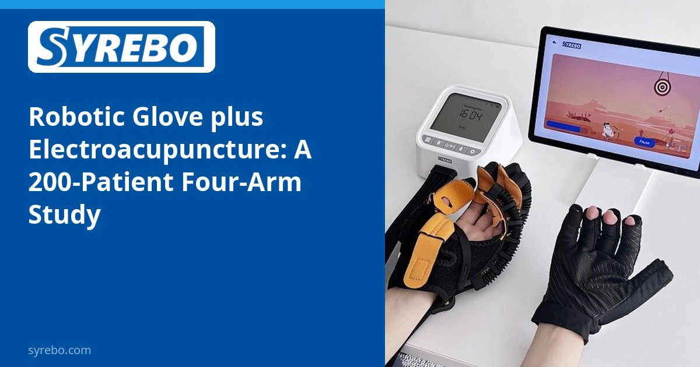
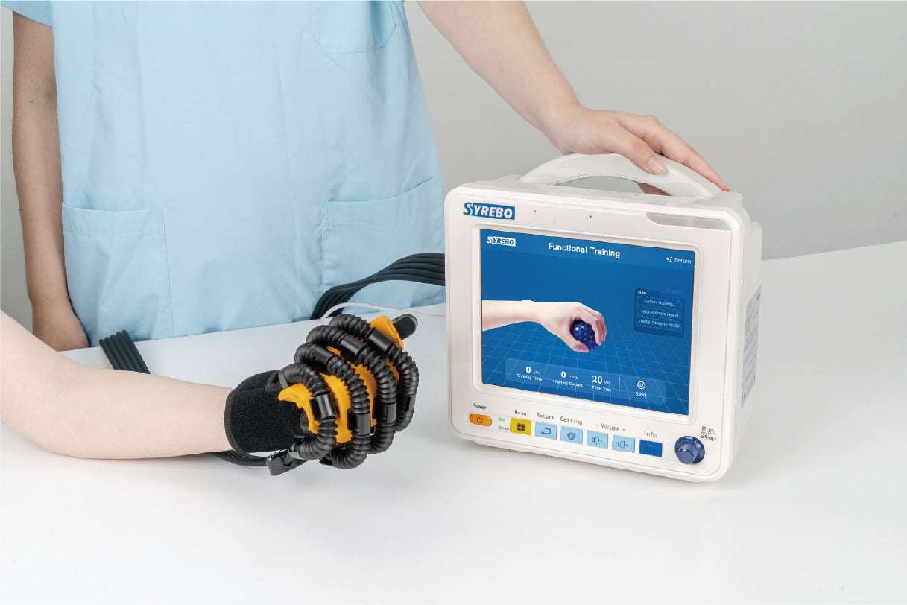

Syrebo Klinik Araştırma Köşesi
Robotik el rehabilitasyonu araştırmalarına kanıta dayalı bakış
Makaleden
康复机器人手套结合电针治疗痰瘀阻络型脑卒中手功能障碍患者的临床研究
孟灵、杨松、钟青华、王瑞安、林伟弟、尹刚刚、常小荣、蒋学余
湖南中医药大学学报, 2022, 42(3): 387-392
湖南中医药大学学报, 2022


Robotik bir eldiveni ve elektroakupunkturu aynı plana koymak belirli bir bütünleştirici seçimdir ve sonuç onu üreten kola bağlı kalmalıdır. Journal of Hunan University of Chinese Medicine'de 2022 tarihli dört kollu bir çalışma, phlegm-stasis blocking collaterals paterninde inme sonrası el bozukluğu olan 200 kişiyi aldı ve eldiven artı elektroakupunktur, yalnızca eldiven, yalnızca elektroakupunktur ve alışılmış rehabilitasyonu karşılaştırdı. Makalenin kendi «toplam etkinlik oranları» %88, %76, %77,6 ve %70,8'dir. Bu bileşik, yazarların özetidir. Bir ürün etkinlik oranı değildir.
Bu patern tanısı altında yollar çoğu kez modern rehabilitasyonu elektroakupunkturla birleştirir. Dört kollu bir düzen, kontrastı olmayan bir önce-sonra hikâyesi yerine kombinasyonu, yalnız cihazı, yalnız akupunkturu ve alışılmış bakımı tek ölçekte gösterebilir.
Toplam etkinlik oranı birkaç yargıyı tek bir yüzdeye indirir. Kaba bir kontrast için işe yarar; adlandırılmış bir ölçekte bir kişinin değişimi olarak işe yaramaz. «Eldivenin etkinliği %88» diye alıntılanamaz.
Çalışma tasarımı
Dört kol: robotik eldiven artı elektroakupunktur, yalnızca eldiven, yalnızca elektroakupunktur ve alışılmış rehabilitasyon. Burada tartışılan sonuç makalenin toplam etkinlik oranıdır. Yazar bağlılıkları, eş yazar Yin Ganggang ile Shanghai Siyi Intelligent Technology'yi içerir. Bu açıklama okumada kalır.
Örneklem ve program
Phlegm-stasis blocking collaterals paterninde inme sonrası el bozukluğu olan iki yüz kişi. Bu, köşedeki en büyük örneklemdir. Makale güncel bir ürünle eşleşebilecek bir model adı vermez ve genel fotoğraf böyle bir eşleşme değildir.
Ana bulgular
Bildirilen toplam etkinlik oranları eldiven artı elektroakupunktur için %88, yalnızca eldiven için %76, yalnızca elektroakupunktur için %77,6 ve alışılmış rehabilitasyon için %70,8'dir. Kombine kolda daha yüksek bir bileşik, yalnızca bu çalışmanın kuralı altında o kolun daha yüksek puan aldığı anlamına gelir. %88'i eldivene atamaz ve %76 bir ürün oranı değildir. Yalnızca eldiven ile yalnızca elektroakupunktur rakamları birbirine yakındır; bu da tüm örüntüyü tek bir bileşenle açıklamaya karşı durur.
İki yüz kişi ve dört kol, bir ürün sayfası için yüzde değil, karşılaştırılabilir bir bileşik verir. Toplam etkinlik oranı olarak okunduğunda kombinasyon, tek modaliteler ve alışılmış bakım arasındaki farklar sınırlıdır.
Makale, burada özetlendiği biçimiyle, köşedeki diğer çalışmaların ortalama farklarını vermez. O ölçekler masaya gelene kadar çalışma bileşenlerin nasıl birleştirildiğiyle ilgilidir, bir el skorunun kaç puan yükseleceğiyle değil.
Sınırlar Yüzdeler çalışmanın kendi toplam etkinlik oranlarıdır. Kombine kol tek başına eldivene ya da elektroakupunktura bağlanamaz. Bir model adı yoktur.